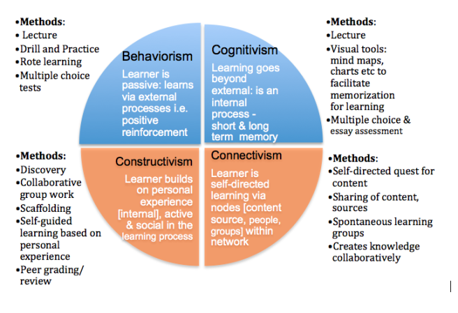
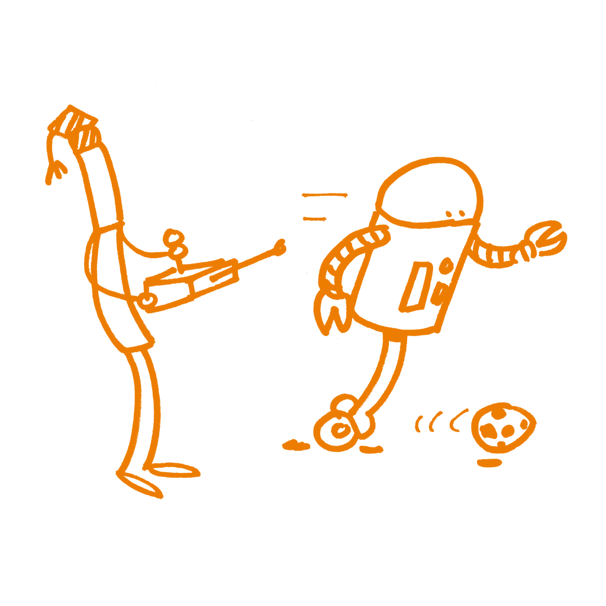

Sobre Aprendizagem e Formação
Este capítulo pretende criar contexto acerca de estratégias de formação, orientação prática na elaboração de um curso, bem como fornecer uma visão geral das teorias pedagógicas. Ele centrar-se-á em três conceitos-chave do ensino e formação:
- Preparação
- Execução
- Reflexão
No ensino e na formação, o primeiro enfoque está na preparação, e só depois na realização efetiva de um curso. A preparação inclui a escolha de conteúdos, a decisão dos métodos de ensino apropriados e a organização dos mesmos numa sequência logica de modo a maximizar a eficácia e o impacto da formação. Em segundo lugar, o enfoque do ensino vai para a forma de ministrar um curso (ou seja, o modo como agimos e interagimos com os participantes). Mesmo que nos sintamos muito confiantes em relação a determinados assuntos, é aconselhável evitar dar inicio a qualquer curso antes de estar terminada a fase da preparação. Aliás, pode revelar-se necessário testar o seu conteúdo, em especial os exercícios práticos. Durante a realização do curso, pode precisar de uma boa dose de flexibilidade, porque as coisas raramente se comportam como esperamos. Finalmente, ensinar é também sobre avaliação e autoavaliação, após terminado o curso. É mais do que provável que se veja envolvido num mesmo curso ou em cursos semelhantes, diversas vezes, especialmente se a avaliação demonstrar que foi bom.
Para se preparar melhor para futuros eventos, deve refletir sobre o que funcionou bem e o que não funcionou tão bem, e usar essa reflexão para definir de maneira iterativa os seus preparativos e realização de cursos. Resumidamente, há um “antes”, um “durante” e um “depois”, ou seja, são atividades em ciclo, tal como se faz em ciência. Este capítulo fornece uma orientação prática para os formadores sobre como preparar e ministrar um curso para várias audiências: quais os principais obstáculos a serem superados e, quais as principais questões que é preciso ter em mente ao organizar uma formação.
Algumas reflexões antes de começar
Nesta secção, vamo-nos concentrar principalmente no primeiro aspeto (preparação) e, de seguida, orientá-lo sobre como planificar e gerir seu curso. Para começar, iremos falar sobre algumas questões teóricas que lhe darão uma ideia do que significa ensinar e aprender e de como o ensino de adultos difere do ensino de adolescentes ou crianças.
Formação vs. Ensino
O ensino prende-se mais com conceitos teóricos do que a formação, mais dirigida à aplicação prática do conhecimento (isto é, desenvolvimento de competências).
O ensino procura transmitir novos conhecimentos, enquanto a formação equipa os já “conhecedores” com ferramentas e técnicas para desenvolver um conjunto específico de competências.
O ensino encontra-se, geralmente, enquadrado no contexto da educação e de ambientes académicos, enquanto que a formação está associada a cursos intensivos de curta duração, após o ensino secundário e / ou pós-graduações.
Habitualmente, os professores dão feedback aos alunos, enquanto os formadores recebem feedback dos alunos.
Contudo...
A formação é o processo de ensinar ou aprender uma competência ou trabalho e, os formadores ensinam, de facto, algo. Pelo que, a formação pode ser considerada como uma atividade mais ampla que, pode englobar o ensino.
O ensino também pode incluir atividades e metas típicas de formação, como sessões práticas e demonstrações.
Apesar das técnicas de ensino e formação variarem, a diferença entre a formação e o ensino não está tanto no processo em si, mas no foco, tendo a formação geralmente um foco mais específico do que o ensino.
A fim de desenvolver competências como profissional, uma pessoa precisa de procurar entender os conceitos teóricos, bem como ter experiência prática. Pelo que, ensino e formação são igualmente importantes e conceitos educacionais complementares.

Estratégias
Existem diferentes abordagens teóricas em relação à aprendizagem e à formação, que por vezes são também influenciadas pela cultura em que vivemos. Algumas pessoas gostam de conversar e de dar palestras/aulas; outros gostam de ouvir, outros não. Alguns exercícios são simples e procuram respostas claras; outros centram-se em problemas e focam-se em dar tempo e espaço aos participantes para refletirem sobre eles e encontrarem soluções. Finalmente, algumas formações são desenhadas para dar aos participantes o máximo de liberdade e deixá-los ser tão criativos quanto possível. O sucesso em casos como estes é mais difícil de avaliar.
Quatro teorias de aprendizagem bem conhecidas são o behaviorismo, o cognitivismo, o conectivismo e o construtivismo. Estas refletem diferentes perspetivas sobre o modo como as pessoas aprendem.
Este esquema simplificado resume as suas principais características em termos muito práticos:

Transcrito de:
O trabalho realizado pelo Software Carpentry também ajuda a entender os processos de aprendizagem: https://carpentries.github.io/instructor-training/
O "Connected Curriculum Framework"
O recente movimento ‘Connected Curriculum Framework’ visa modernizar as abordagens de aprendizagem e adaptá-las ao estudante do século XXI. O objetivo geral do modelo é melhorar as relações entre a educação dos alunos e as práticas de investigação, quebrando divisões desnecessárias. Omodelo valoriza um diálogo rico, uma investigação ativa, colaboração e interação entre estudantes e investigadores, bem como entre as universidades e as comunidades mais amplas em que se inserem. Este modelo traz promessas interessantes na área de Ciência Aberta e da Ciência do Cidadão, “Crowdsourcing”, etc. Pode ler o ‘Connected Curriculum Framework’ aqui: http://www.ucl.ac.uk/ucl-press/browse-books/a-connected-curriculum-for-higher-education
De que modo é isto relevante para si?
O que é importante saber é que existem diferentes abordagens e que não se deve sentir obrigado a seguir apenas uma estratégia, mas que pode decidir em que ponto da sua formação deve aplicar que estratégia para ensinar e avaliar.
No final, é a prática que importa e pode ser útil confrontar o seu conteúdo e exercícios práticos com uma das abordagens teóricas, a fim de descobrir se eles são apropriados naquele momento e para aquele público-alvo.

Expectativas sobre um formador
Todos aqueles que vêm à sua formação trazem expectativas, conscientes e inconscientes. Entre outras (como metodologia de ensino, conteúdo e conhecimento prévio), expectativas específicas sobre o formador.
A maioria dos alunos espera que o formador:
Seja entusiasta em relação aos tópicos que está a ensinar.
Tenha conhecimento geral dos valores científicos (ou humanistas) básicos e reconheça o papel da "abertura" como um elemento intrínseco e essencial do conhecimento.
Compreenda a importância de fatores como a transparência e reprodutibilidade da investigação e as implicações sociais mais amplas dos mesmos.
Demonstre familiaridade com o processo de investigação, incluindo o planeamento da investigação, a condução do processo de investigação, produção de resultados de investigação e a comunicação e publicação desses resultados.
Tenha conhecimento sobre os diferentes tipos de processos e de resultados da investigação que podem ser partilhados, incluindo dados, código e software, “papers”, comunicação, fluxos de trabalho, candidaturas a financiamentos e planos de gestão de dados.
Esteja ciente das políticas, regulamentos e leis que podem afetar os investigadores ao fazer Ciência Aberta
Compreenda as pressões que resultam das políticas institucionais, ou da falta delas, que moldam a forma como os investigadores lidam com dados e resultados, desde a fase de aquisição até às fases da partilha e disseminação.
Compreenda as expectativas que são levantadas na sociedade sobre o uso dos recursos e resultados das atividades científicas, tais como o seu impacto na ciência do cidadão, a compreensão pública da ciência, a sua influência nos educadores, etc.
Seja capaz de ensinar e ter um profundo conhecimento acerca de Ciência Aberta. (Na verdade, é disso que este livro trata.)
Forneça links para documentos e recursos on-line que apoiem os recém-chegados.
Públicos-alvo
Uma boa maneira de começar a sua formação sobre Ciência Aberta é dirigir-se a públicos que tenham alguma ideia e / ou estejam interessados no assunto. Geralmente, essas pessoas podem estar mais recetivas à ideia da “Ciência Aberta”. Começar a sua formação com um público motivado tem várias vantagens:
Saber que o seu público está realmente interessado no tópico pode deixá-lo mais à vontade ao enveredar por uma nova área de formação. Pode fazer um pequeno inquérito para avaliar a situação com antecedência.
Um público motivado provavelmente contribuirá para a discussão e fornecerá informações úteis sobre como melhorar o currículo da formação.
Públicos motivados podem tornar-se “embaixadores” da sua formação.
Informações que precisa de reunir sobre seu público:
Manter um ambiente inclusivo e ter em consideração a diversidade de experiências dos potenciais participantes é importante para qualquer formação ser bem-sucedida. Para saber como tornar seu workshop inclusivo, veja o Conference Planning Checklist by SPARC.
Saber de antemão que os participantes se conhecem uns aos outros terá impacto na dinâmica do grupo e nos tipos de atividades que pode querer realizar.
A motivação dos membros da audiência será influenciada pelo facto da sua participação ser voluntária ou não.
O nível de conhecimento do público em relação aos tópicos a discutir afetará o conteúdo e o estilo das apresentações.
A habituação do público a um método de aprendizagem específico pode afetar o modo como este reage a um formato de formação diferente
Tamanho da audiência:
Deve definir o número de participantes com base no espaço, capacidade e tempo disponíveis para trabalho prático.
O tamanho da audiência afetará o modo como eles se envolvem e interagem com o processo.
Se quiser uma audiência maior, considere reparti-la em grupos de trabalho, mas tenha em atenção os requisitos logísticos que daí podem advir.
Tenha em consideração se o seu curso será aberto ao público em geral ou limitado a pessoas afiliadas à instituição anfitriã. Um evento público pode ajudar a aumentar e diversificar a audiência, enquanto que limitar o público à instituição pode ajudá-lo a concentrar-se em tópicos específicos. Outro fator a considerar é que será mais provável que os participantes de uma mesma instituição já se conheçam.
Considere recorrer ao video como meio para alcançar um público mais amplo. Embora seja mais fácil capturar a atenção dos participantes e criar (e usar) ligações entre os participantes com um grupo local pequeno, criando e utilizando uma sensação autêntica de conexão.
Tenha em consideração a importância da escolha da melhor abordagem para diferentes públicos-alvo (reuniões, workshops, webinars, boletins informativos, redes sociais, etc. )
Com um público heterogêneo, tenha em mente as diferentes partes interessadas envolvidas de modo a atender às suas diferentes necessidades, conhecimentos e / ou responsabilidades:
financiador, instituição / empregador, investigador (aluno, aluno de doutoramento, investigador, líder de projeto ),
Apoio (unidade de apoio à investigação, biblioteca, TI )
parceiros comerciais de um projeto
O resultado da formação deve ser que os formandos:
- Tenham uma melhor compreensão prática dos principais conceitos e aplicações da Ciência Aberta.
- Usem com confiança o que foi aprendido durante a formação, aumentando assim o impacto do seu trabalho em contexto profissional.
- Sejam capazes de funcionar em rede com defensores de múltiplas disciplinas e atuar numa iniciativa global de Ciência Aberta.
Ensinando adultos
A investigação académica é exercida por adultos, pelo que os participantes de qualquer formação em Ciência Aberta serão, provavelmente, adultos, frequentemente com um grau do ensino superior (2º ou 3ª ciclos). É interessante, portanto, ver até que ponto ensinar crianças ou adolescentes (pedagogia) difere do ensino de adultos (andragogia). A Rede Canadiana de Literacia e Aprendizagem realizou um trabalho interessante sobre essa diferença e resumiu-a em sete princípios:
Os adultos devem querer aprender Isto significa que a motivação interior e as “mais-valias” são decisivas pelo que pode valer a pena conhecê-los antes de iniciar o curso.
Os adultos aprenderão apenas o que sentem que precisam de aprender Os adultos são práticos na sua abordagem à aprendizagem; eles querem saber: "Como é que isto me vai ajudar agora?" O formador deve, portanto, ser prático e direto.
Os adultos aprendem fazendo Isto é igualmente verdade para as crianças, mas a participação ativa e imediata é mais importante para os adultos.
A aprendizagem de adultos centra-se em problemas, que devem ser realistas Os participantes muitas vezes chegam com um problema e será tarefa do formador descobrir lacunas e tentar resolvê-las.
A experiência afeta a aprendizagem de adultos. Os adultos têm mais experiência que as crianças, seja ela negativa ou positiva. O formador pode fazer uso dessa experiência prevenindo associações negativas.
Os adultos aprendem melhor informalmente. Os jovens em idade escolar têm geralmente que seguir um currículo. Muitas vezes, os adultos aprendem apenas o que sentem que precisam saber. O formador deve, portanto, tentar envolver o seu público no processo de aprendizagem. O que pode acontecer ao tornar o ambiente descontraído, informal e convidativo.
Os adultos querem ser orientados. Os adultos querem informação que os ajude a melhorar a sua situação ou a resolver problemas, mas, não querem que lhes seja dito o que têm que fazer, preferem escolher entre opções tendo por base as suas necessidades individuais.
Portanto, o formador precisará de
fornecer os pontos de descoberta, ferramentas e apoio onde os investigadores os encontrem
Preparar a documentação on-line com orientações claras, compreensíveis e atualizadas
Compilar boas ferramentas ou modelos utilizáveis (e encontráveis ) para as gerar
Em resumo, os interesses dos adultos estão focados no seu próprio aperfeiçoamento e veem a formação como um exercício individual de desenvolvimento de capacidades. Os adultos gostam de ser respeitados como tal e que as suas expectativas sejam atendidas individualmente, de forma exaustiva, sempre que possível.
A taxonomia de Bloom
Os resultados de aprendizagem são muitas vezes a maneira mais específica de estabelecer o modo como uma ação de formação é ministrada, adaptando-se o que for necessário para que a maior parte dos resultados esperados seja alcançada pela maioria dos participantes. Estes alcançam os resultados esperados de várias formas, muitas vezes passíveis de uma avaliação quantitativa.
A especificação dos resultados esperados faz parte do conceito de abordagem da formação como um processo cognitivo. Em 1956, Benjamin Bloom criou uma taxonomia de níveis cognitivos que foi sendo modificada ao longo do tempo. Esta ferramenta é muito útil para construir resultados de aprendizagem consistentes e reutilizáveis em qualquer assunto. Em geral, as transições entre níveis não contíguos de cognição não são aceitáveis. A taxonomia ajuda a detetar situações potencialmente difíceis em que a avaliação pode falhar porque o nível de cognição, aquando da aprendizagem, não é o mesmo que o nível de cognição exigido pela avaliação que está a ser implementada.

Uma versão atualizada \ (desde 2001 ) pode também ser encontrada aqui: https://thesecondprinciple.com/teaching-essentials/beyond-bloom-cognitive-taxonomy-revised/
A Taxonomia de Bloom é um método de classificação com seis níveis. Vale a pena utilizar a Taxonomia de Bloom porque esta representa um passo significativo em direção ao desejo de construir ações de formação e de ensino sólidas. Juntamente com a Taxonomia de Bloom, podem-se encontrar vários tipos de recursos ao nível da fase de planeamento de cursos de formação, tais como terminologias anotadas, verbos a serem usados ou a evitar, a construção das questões de avaliação, etc.
Objetivos da aprendizagem e resultados da aprendizagem
Frequentemente a comunidade de formadores emprega estes dois termos sem distinção. Os Objetivos, constituídos por objetivos ou metas, e os Resultados, que incluem efeitos tangíveis, podem sobrepor-se, mas não são verdadeiramente equivalentes.
Ao projetar uma ação de formação deve-se pensar, inicialmente, nos objetivos e, em seguida, listar os resultados que se deseja que o público-alvo alcance. Não existe qualquer problema quando estes parecem sobrepor-se aqui ou acolá, ou se, como acontece na maioria dos casos, um objetivo inclui um ou mais resultados. Todos os exercícios práticos devem ser elaborados em torno de resultados específicos.
Nota: Em inglês, deve evitar-se usar a abreviatura LO porque é erradamente usada nos dois casos.
Apresenta-se, em seguida, uma tentativa de esclarecer esta situação e remover eventuais ambiguidades:
Objetivos de aprendizagem
Descreva os objetivos e intenções do formador.
Indique os objetivos e as metas do curso.
Centre-se no conteúdo e nas aptidões que são importantes em contexto de sala de aula ou de programa.
Descreva, se necessário, o que os formadores irão fazer.
Os objetivos devem ser específicos e detalhados.
Resultados de aprendizagem
Os Resultados de Aprendizagem dos Participantes identificam os "produtos" abrangidos pelo curso e constituem a prova de que as metas ou objetivos foram alcançados.
Os Resultados de Aprendizagem são declarações que descrevem ou listam conhecimentos e conteúdos apreendidos e mensuráveis - refletindo aptidões, competências e conhecimentos que os participantes alcançaram e podem demonstrar possuir ao concluir um curso com êxito.
Os resultados expressam aptidões de raciocínio de nível superior que integram o conteúdo e as atividades do curso e podem ser observados como um comportamento, aptidão ou conhecimento utilizável ao concluir o curso.
Os resultados são exatamente o que as avaliações pretendem mostrar - especificamente o que o participante será capaz de fazer após concluir o curso.
Um resultado mensurável pode ser exibido ou observado e avaliado por critérios.
Os resultados são critérios claros e mensuráveis que visam orientar o processo de ensino, aprendizagem e avaliação no curso.
(Adaptado de http://provost.rpi.edu/learning-assessment/learning-outcomes/objectives-vs-outcomes)
Para os Objetivos de Aprendizagem em Open Science, veja-se este documento do FOSTER: https://doi.org/10.5281/zenodo.15603 (ver páginas 13 e 14)
Exemplo de um objetivo de formação:
- "Aprender a usar a avaliação e a reação à formação com o máximo de eficácia”
Exemplo de um resultado de formação:
- "Ao concluir o curso, o aluno deverá ser capaz de elaborar um exercício prático e de desenhar uma estratégia para avaliar a sua eficácia"

Motivação & desmotivação
Um dos principais componentes de uma ação de formação é garantir que a falta de confiança que os participantes possam ter ao serem apresentados a uma nova área (Ciência Aberta, neste caso) não os desencoraja de prosseguir. Mesmo que alguns participantes estejam familiarizados com os conceitos apresentados na ação de formação, é importante reconhecer quando a matéria está a ser pouco clara para eles. Reconhecer que as apreciações dos participantes, mesmo que mal entendidas, são válidas é fundamental de modo a estimular uma lógica de crescimento e a motivá-los no sentido de aceitar e endossar as práticas da Ciência Aberta.
Existem várias estratégias que podem ser empregues durante toda a ação de formação visando motivar os participantes. Retirado e traduzido de Software Carpentry
Estratégias para criar valor
Relacione o material a utilizar com os interesses ou valores dos participantes.
Forneça tarefas e estudos de caso autênticos, baseados no mundo real, idealmente indo ao encontro da experiência e interesses imediatos dos participantes.
Mostre relevância dos conteúdos para a atual vida académica dos participantes.
Transmita a sua própria paixão e entusiasmo pela Ciência Aberta.
Estratégias para gerar expectativas positivas
Garanta o alinhamento dos objetivos, das avaliações e das estratégias de ensino.
Dê, desde o primeiro momento, oportunidades de sucesso na aprendizagem através da aplicação dos conceitos em exercícios práticos e em tutoriais.
Estratégias para a auto-eficácia
Dê aos participantes opções e capacidade de fazer escolhas.
Dê aos participantes a oportunidade de refletir e fazer suas próprias associações entre a Ciência Aberta e o seu trabalho particular.
Guia prático
Poderá encontrar mais informação sobre o planeamento concreto e a execução de uma ação de formação sobre Ciência Aberta nos capítulos sobre Aspectos Organizativos e Exemplos e Orientação Prática.
Estruturação de um curso
A criação de um determinado curso poderá ser ou orientada pelos objetivos planeados para o curso ou pelos seus resultados.
Planeamento baseado em objetivos e não em resultados
O SMART é uma técnica interessante para especificar metas / objetivos que também é usada na gestão de projetos. SMART é um acrónimo que representa cinco critérios: Simples - Mensurável - Ambicioso - Realista - Temporizado.
O objetivo será simples se puder ser entendido por uma pessoa não familiarizada com o assunto. Isto é, pode-se explicar de antemão aos estudantes o que eles vão aprender. Geralmente, é uma boa ideia apresentar o objetivo no início de uma aula. Simples significa que o objetivo pode ser colocado, de forma concisa, numa frase.
O objetivo é mensurável quando se pode determinar objetivamente se a meta foi atingida. A mensurabilidade evita objetivos imprecisos como "os participantes entendem o conceito de Ciência Aberta", que é muito amplo e difícil de medir, pois há muitos componentes diferentes. Em vez disso, deverão usar-se verbos de ação: identifique, desenhe, nomeie, explique, calcule, etc. Os verbos a utilizar para bons objetivos de ensino foram categorizados pela taxonomia de domínios cognitivos de Bloom (clinton.edu/curriculumcommittee/listofmeasurableverbs.cxml). Medir ajuda o formador e os alunos a avaliar o respectivo progresso.
O objetivo é ambicioso quando se desafiam os participantes. Existe um benefício claro para eles? Pretende-se que a formação amplie o seu horizonte de conhecimentos? De que maneira esse facto lhes dá uma vantagem? Ser ambicioso significa ter uma resposta para a pergunta: o que é que os participantes irão aprender que não conseguiriam por outros meios? Quando se sente vontade de fazer valer e defender um ponto de vista, provavelmente este é ambicioso.
O objetivo é realista quando o formador acredita sinceramente que os objectivos de aprendizagem podem ser alcançados no prazo que foi determinado. Ser realista envolve trabalho de casa: os participantes têm o conhecimento básico necessário? De que aptidões práticas precisam? Quais os pré-requisitos técnicos que existem? O formador está preparado para perguntas inesperadas? Por exemplo, entender todas as licenças Creative Commons numa hora pode ser realista para um grupo, mas fora do alcance para outro.
O objetivo é temporizado se e quando existe um prazo concreto em que o objetivo deve ser alcançado. Os formadores que ensinam pela primeira vez excedem frequentemente o limite temporal previsto inicialmente. Definir limites temporais para os objetivos de aprendizagem ajudam o formador a estruturar a aula, a reconhecer e a reagir perante atrasos inesperados. Uma boa forma de planeamento temporal consiste em ter um horário ou plano de aulas detalhado.
Adaptado de Os objectivos SMART, Como criar objetivos de projeto concretos e mensuráveis por Kristian Rother.
Planeamento baseado em resultados e não em objetivos
Use um modelo de formação "ao contrário", conhecido como Backward design, uma técnica para planeamento de aulas que privilegia os resultados:
Começar pelos objetivos da aprendizagem.
Decidir que fatores comprovam que esses objetivos foram cumpridos (avaliação sumativa, ver Avaliação pós-formação abaixo).
Escolher o melhor formato e modelo de conteúdo para preparar a audiência para o que terá que fazer durante a avaliação sumativa.
Ordenar o conteúdo por complexidade crescente e fornecer a matéria e motivação necessários para conciliar o que os alunos sabem e o que necessitam de saber para completar o teste de avaliação sumativa. (Manual do Formador Carpentry)
O backward design desafia os métodos “tradicionais” de planeamento curricular. No planeamento curricular tradicional é criada e/ou selecionada uma lista de conteúdos que será lecionada. Com o método [Backward design], o educador começa com os objetivos, cria ou planeia avaliações e, por último, cria planos de aula. Os adeptos do método de backward design ligam os processos ao uso de um \road map Neste caso, o destino é escolhido em primeiro lugar e o "road map" é usado para planear a viagem ao destino desejado. No planeamento curricular tradicional, por seu lado, não existe um destino formal identificado antes do começo da viagem.
A ideia no backward design é ensinar até ao “ponto final” ou até serem alcançados os objetivos de aprendizagem, o que normalmente assegura que o conteúdo lecionado permanece conciso e organizado. Este facto, por seu lado, visa promover um melhor entendimento do conteúdo e processos a serem lecionados aos estudantes. O formador é capaz de se focar em abordar os conteúdos que os estudantes necessitam de aprender, em saber que dados podem ser recolhidos para demonstrar que os estudantes aprenderam os objetivos desejados (ou modelos ou padrões de aprendizagem) e em assegurar como é que os estudantes irão aprender.
Conteúdo
Recolha de conteúdos
Antes de começar a ensinar o formador terá que recolher e preparar conteúdos. Atualmente os conteúdos estão disponíveis em massa e o problema reside menos em encontrar ou criar conteúdos, e mais em encontrar conteúdos adequados ou adequar os conteúdos encontrados às necessidades e capacidades do público alvo.
Por favor consulte o capítulo sobre Exemplos e Orientação Prática que contém informação útil acerca de como adotar, adaptar e desenvolver conteúdos.
Redução de conteúdos
Um dos maiores desafios no desenho de cursos de formação é a redução do conteúdo para o formato de formação. Se o formador tiver apenas duas horas, será necessário fornecer a informação mais importante relativamente a um tópico durante este período. Enquanto formador, no entanto, o formador tem muito mais conhecimento que gostaria de transmitir. O formador deve reduzir o conteúdo para os pontos chave mais importantes. O que é realmente necessário saber e o que constitui apenas um detalhe ou tópicos adicionais? Deve definir prioridades temáticas, ser transparente ácerca de omissões e informar os participantes acerca destas.
O formador deve tentar reservar tempo suficiente para questões em aberto, discussões, partilha de experiências entre participantes. Esta técnica irá ajudar o formador a encontrar as questões “certas”. Normalmente estas são muito mais básicas do que o formador esperava ou mais detalhadas e específicas do que as que o formador planeou à partida.
Dar início à formação
Apresentações
No início da ação de formação, os formadores devem apresentar-se de forma clara e sucinta assim como referir as suas áreas de especialização. Por que razão devem os participantes ouvi-los? De que experiência e aptidões dispõem que sejam relevantes? Devem, portanto, fazer uma apresentação geral dos objetivos, conteúdo e resultados da ação de formação - o que os participantes aprenderão e porquê. Projetar segurança como sendo um especialista na área é fundamental para estabelecer a confiança.
Dependendo do tamanho do público alvo, da quantidade de tempo disponível e do grau de importância atribuído à interação como elemento chave para resultados de formação bem-sucedidos, o formador pode começar por uma breve apresentação por parte dos participantes (embora esta opção, provavelmente, não seja recomendada quando o grupo tem mais do que 15-20 participantes ). Este pode ser um bom momento para recolher as opiniões dos participantes sobre as suas próprias expectativas e níveis de experiência (se tal não for feito antes, por exemplo, com um questionário on-line) e avaliar em que medida estes correspondem aos resultados pretendidos e à visão geral do formador quanto ao público-alvo real e o esperado. Se houver uma grande diferença, este será o momento de considerar maneiras de adaptar o programa adequadamente. Por exemplo, se os participantes são mais experientes ou dispõem de mais conhecimentos do que o esperado, os aspetos básicos de áreas específicas da Ciência Aberta podem ser abordados de forma breve, de modo a dedicar mais tempo a discussões interativas nas quais é dada relevância às perguntas e experiências dos próprios participantes.
De notar que não há uma necessidade absoluta de adaptar imediatamente o conteúdo mas este deverá ficar claro em termos de cobertura, permitindo que todos os participantes saibam o que será ou não abordado.
Uma vez mais, a informação fornecida pelo Software Carpentry pode revelar-se útil como forma de criar o ambiente adequado.

Quebra-gelo
Visando motivar os participantes e ajudá-los a conhecerem-se uns aos outros e aos formadores, muitas sessões de formação começam com um exercício de quebra-gelo. A criação de um ambiente de aprendizagem caloroso, acolhedor, amigável e positivo deve permitir que os participantes participem e aprendam melhor, além de os ajudar a sentir-se mais à vontade.
Embora os jogos de quebra-gelo possam ajudar a criar uma atmosfera positiva, um quebra-gelo mal escolhido pode fazer o oposto, fazendo com que as pessoas se sintam nervosas ou desconfortáveis. Ao escolher um quebra-gelo deverá haver algum cuidado e ter-se em linha de conta o perfil dos participantes e as possíveis dinâmicas de grupo. As pessoas não devem sentir-se envergonhadas ou forçadas a revelar informações pessoais que não desejam partilhar. Os grupos irão diferir de modo significativo – se os participantes tiverem diferentes idades ou diferentes estatutos numa determinada organização, se tiverem diferentes níveis culturais ou diferentes níveis de formação académica, esses fatores irão afetar a quantidade de pontos em comum que podem existir entre eles. O formador deverá tentar, portanto, manter este tipo de exercícios relacionados com os resultados pretendidos na aprendizagem. Por favor, consulte a seção Leitura adicional para aceder a exemplos.
Durante a formação
Defina os resultados desejados da formação e forneça sempre orientação aos seus formandos:
Onde estamos?
Para onde queremos ir?
O que iremos abordar?
Estabeleça um equilíbrio entre sessões expositivas do conteúdo a trabalhar (máx. 20 minutos) e sessões com atividades para trabalhar o conteúdo (Klaus Döring, 2008).
Dê voz aos formandos tão cedo quanto possível, isto é, encoraje a arendizagem ativa!
Aprendizagem ativa
A aprendizagem ativa é o processo pelo qual os formandos são envolvidos ativamente no processo de aprendizagem, em vez de absorverem aulas "passivamente". A aprendizagem ativa envolve leitura, escrita, discussão e participação na resolução de problemas, análise, síntese e avaliação. A aprendizagem ativa envolve frequentemente aprendizagem cooperativa com outros participantes.
Usar os princípios da aprendizagem ativa e implementá-los na formação é, geralmente, uma boa ideia. Você é o segundo melhor juiz dos seus benefícios. Lembre-se que o primeiro juiz é o participante.
A aprendizagem ativa ajuda a contornar a diversidade nos estilos de aprendizagem e outras dificuldades com públicos. Além de mais eficiente em termos de atingir resultados mais elevados, a aprendizagem ativa também faz face a questões cognitivas relacionadas com a natureza do conteúdo e com a sua forma de apresentação, como se mostra no diagrama seguinte, encontrado em diversos livros e recursos online e conhecido como o Cone de Aprendizagem. A aprendizagem ativa é ideal para os níveis superiores da Taxonomia de Bloom (Analize, Define, Create, Evaluate), e isto também corresponde às melhores camadas de memorização: o que você faz, escreve ou faz - a metade inferior do Cone de Aprendizagem. Os problemas cognitivos surgem mais facilmente quando o conteúdo abarca vários destes níveis e não aborda também os níveis intermédios. Verificar o seu conteúdo face ao Cone de Aprendizagem é uma forma fácil de detetar essas potenciais falhas na formação. Do mesmo modo, permite-lhe decidir usar mais ajudas visuais quando supõe que a necessidade de memorização é maior. Assim, quando o seu público se atrasa, pode usar esta técnica para diagnosticar, tentar localizar as causas e escolher a solução correctiva mais eficiente.

Gamificação
Os fundamentos da metodologia na Aprendizagem Ativa têm base em teorias modernas de aprendizagem (em parte, no Construtivismo e algum Conetivismo ) e adicionam técnicas de envolvimento na aprendizagem para quebrar barreiras e derrubar tantos obstáculos quanto possível. Por exemplo, gamificar um conteúdo de aprendizagem pode afastar os formandos da aquisição passiva de conteúdo em direção ao pleno envolvimento, conduzindo ao reposicionamento do formador como alguém que se afasta e observa o processo de aprendizagem e como ele funciona. Um exemplo de gamificação na formação é dado aqui: Key Terms, um jogo didático para a consolidação conceptual. Um exemplo adicional pode ser encontrado em CURATE: The Digital Curator Game.
Envolvimento inclusivo
Como envolver participantes silenciosos? Um bom ponto de partida será fazer uma pergunta e esperar pelo menos 30 segundos por respostas (Mary Budd Rowe, 1986). O resultado será que mais pessoas se envolvam na discussão, as respostas serão melhores e os formandos mais lentos terão oportunidade de responder.
Outro método de conseguir envolvimento inclusivo é o progressive stacking. Um moderador escolhe, entre as pessoas que querem falar e ainda não falaram, quem o irá fazer. Além disso, vozes sub-representadas, incluindo sub-representação de género ou étnica, serão escolhidas para falar antes.
Durante as discussões (em grupos maiores), deve evitar microfones fixos, que desencorajam envolvimento inclusivo e encorajam monólogos. Use, em vez disso, um microfone sem fios ou "mão levantada" para assegurar que o próximo a falar pode ser escolhido pelo moderador. Quanto maior o grupo, maior a necessidade de um moderador que acompanhe quem está a falar e quem não está. Será também tarefa do moderador escolher quem fala a seguir, dentre os participantes que ainda não participaram, para evitar que o envolvimento na sessão seja limitado apenas a alguns participantes.
Recomendações gerais
Mantenha a ligação! Tente manter contacto constante com o grupo,verifique o seu ritmo e o dos outros.
Tenha cuidado para não sobrecarregar os participantes com conteudo excessivo ou demasiado difícil.
Esteja aberto a comentários a qualquer momento mas evite ou termine ativamente discussões infindáveis.
Intervalos: Permita sempre intervalos. Quanto mais longo o curso, maiores e mais frequentes devem ser os intervalos.
Prepare versões curtas, médias ou longas dos exercícios para poder ser flexível no caso de as discussões serem mais ou menos intensas.
Esteja preparado para estudantes difíceis e consulte alguns materiais sobre resolução de problemas antes do curso.
(Pode encontrar algumas ideias no MozFest2017 Facilitator Guide). Deve, em qualquer caso, ter uma ideia do que fazer quando surge uma conversa paralela quando alguém está a ser rude ou está desatento, etc. Note que há formas verbais e não-verbais de enfrentar estas situações.
Sumário / Visão global: No fim da formação é conveniente dizer aos participantes o que faz e porque o fez. Isto também tornará a avaliação mais fácil.
Desfrute, você próprio, da sessão.
Feedback imediato
No final de cada módulo, peça um comentário aos participantes no formato "bom-mau" (isto é, indique uma coisa que foi boa/útil no módulo e uma coisa que não foi clara ou poderia ser melhorada). Isto pode ser feito com mais escalas. Aqui está um exemplo de comentários com 6 níveis.
Outra forma de ter feedback imediato, especialmente em pontos pré-definidos, é através de consultas contínuas. Como exemplo, pode usar-se o Slack para obter feedback imediato, dando aos membros de um canal a opção de alterar a sua escolha numa sondagem a todo o momento. A contagem do feedback deve ser mostrada aos participantes. Mostrar totais ou gráficos pode funcionar como um incentivo. Ferramentas online, alojadas na nuvem, geram mais envolvimento, especialmente porque a dependência de ferramenteas específicas desaparece. Os formandos podem usar dispositivos móveis e sentir-se com poder. Há abundantes exemplos disto. Deve estudar os métodos antes de os usar com uma audiência real e começar com os sistemas que têm passos de familiarização mais fáceis, Socrative e Learning Catalytics, Polleverywhere, Directpoll.
Outras estratégias de feedback instantâneo podem encontrar-se em teachthought.com
Avaliação da formação
Uma formação bem-sucedida em Ciência Aberta também necessita de avaliação por fases. Sobretudo no início de um curso, é útil ver o feedback dos formandos. Uma avaliação pode dar-lhe informações valiosas sobre os seus métodos e conteúdos. A avaliação contínua e a consideração dos comentários melhora a qualidade da formação e o desempenho do formador.
Tipos de feedback
Há modos diferentes de obter feedback dos participantes:
Formas clássicas de avaliação
Utilize um formulário de avaliação em que pede aos participantes feedback sobre o seu desempenho como professor.
Obtenha declarações intercalares durante o curso para confirmar se o curso corresponde às expetativas. Isto dar-lhe-á oportunidade de fazer ajustes antes de continuar.
Feedback verbal
- Peça aos formandos um resumo breve da sua experiência no curso.
Auto-avaliação
- Faça a auto-avaliação, o que correu bem, o que correu mal?
Feedback a longo prazo
- Passados 6 meses, coloque questões sobre alterações plásticas no comportamento, mais genericamente sobre modificações na atitude e os seus potenciais efeitos.
Feedback entre pares
- Os colegas ajudá-lo-ão com a sua experiência na preparação do curso, eventualmente assistindo eles próprios ao curso, trocando depois consigo e oferecendo-lhe os seus comentários.
Métricas para a eficiência da formação
De modo a avaliar um curso, deve antes de mais estabelecer com o que quer que os seus formandos estejam familiarizados, saibam, analisem criticamente ou consigam explicar. Porque é que está a dar o curso? Que objetivos pretende alcançar? E logo que o curso termine, deve verificar se atingiu esses objetivos. Há critérios diferentes para medição do sucesso e eficiência do seu curso (Kirkpatrick & Kirkpatrick, 1994):
Reação (corresponder às expetativas): Os formandos estão satisfeitos com o curso? Os participantes atingiram os seus objectivos de aprendizagem? As expetativas eram realistas? Como reagiram ao curso? Havia uma estrutura clara ou um fio comum?
Learning: Os participantes aprenderam algo novo? É útil na sua situação actual? Entenderam tudo? Conseguem sugerir ferramentas/plataformas para as respetivas práticas da Ciência Aberta? Cumprem os objetivos de aprendizagem pré-especificados?
Comportamento: Vão alterar o modo como fazem investigação? O que vão fazer com o conhecimento adquirido? Recomendarão a formação/conteúdos a terceiros?
Resultados: Que resultados, quando atingidos, têm um impacto mais positivo em relação aos objetivos? Quais foram os que trouxeram mais benefícios?
Técnica da Avaliação de Formação de Kirkpatrick
O Kirkpatrick's Four-Level Training Evaluation Model é um modo padronizado de analisar a eficácia e o impacto da sua formação.
Exercícios
Avalie o resultado da aprendizagem através de textos com lacunas e questionários.
Faça um exercício simples no início e o mesmo exercício no final. Veja depois se as opiniões se alteraram..
Palavras-chave: Prepare tiras de papel com diferentes aspetos-chave da Ciência Aberta. Divida os formandos em grupos (pelo menos 3 pessoas) e deixe que cada um explique 2 ou 3 palavras-chave aos outros.
Dê aos participantes um exemplar impresso da estrutura geral para o método científico e peça-lhes que indiquem ferramentas e métodos da Ciência Aberta que se apliquem a cada um deles.
Dependendo do tempo disponível, pode também pedir-lhes que criem um cenário imaginário de investigação simples e que determinem os protocolos da Ciência Aberta aplicáveis.
Reformule o seu curso
Tinha as suas expetativas antes de lecionar o curso e a experiência mostrar-lhe-á que as coisas nem sempre funcionam como as planeámos. Não fique muito dececionado, pois na primeira vez uma resposta para todos os resultados é quase impossível; em vez disso, aproveite o final do curso como ponto de partida para reformular o seu material e repensar alguns dos seus métodos e exercícios práticos.
Esteja ciente que pode precisar de até três tentativas até ter a sensação de que o seu curso tem o formato adequado e satisfará tanto os participantes como o instrutor.
Resultados de aprendizagem deste capítulo
Depois de ler este capítulo, deve ser capaz de responder a pedidos de planeamento e execução de ações de formação em Ciência Aberta para públicos específicos.
Exercício
Considere a seguinte situação hipotética: Foi convidado para formar investigadores principais numa escola de engenharia. A formação será sobre a gestão de ficheiros que são partilhados entre grupos de investigação na escola e os seus colegas no Canadá e na Nova Zelândia, num contexto de Ciência Aberta.
Num parágrafo, escreva a estratégia de organização da sua ação de formação, em traços gerais; por exemplo, o que planeia fazer antes, durante e após a sessão de formação.
Enumere três perguntas que pode formular para caraterizaraa sua audiêcia.
Enumere três objetivos de aprendizagem.
Enumere três resultados de aprendizagem expetáveis.
Enumere três ações que pode usar para quebrar o gelo e envolver o seu público.
Enumere três perguntas que pode fazer para verificar o que os participantes aprenderam.
Enumere três perguntas que pode fazer para verificar se os participantes gostaram da sessão.
Esteja preparado para reagir a nuvens de palavras genuínas e criadas espontaneamente (sli.do or outra ferramenta) : não tenha receio de trabalhar em conjunto com o seu público, aprenda a jogar com o que conhece (e assuma que também tem o direito a alguma perplexidade)
Exercícios semelhantes podem ser aplicáveis ao treino de diferentes audiências, para as quais pode considerar o mesmo método para testar o que sabe.
Leitura adicional
Sobre a Taxonomia de Bloom:
- Davis (2014). Using Bloom’s Taxonomy to Write Learning Outcomes. pearsoened.com
- Clinton Community College (1966-2017). List of Measurable Verbs Used to Assess Learning Outcomes. clinton.edu
Recursos/Exercícios para quebrar o gelo
- Mindtools. Ice Breakers. Easing Group Contribution. mindtools.com
- Students as Partners, Teaching, Learning and Support Office. Peer Support Icebreakers. documents.manchester.ac.uk
- The balance careers. The 10 Best Icebreaker Activities for Any Work Event. Activities for Meetings, Training, and Team Building Sessions. thebalance.com
Referências
Ambrose, Bridges, DiPietro, Lovett, Norman and Mayer. How learning works. Highlights summarized by Brent and Felder. Seven research-based principles for smart teaching"; ISBN: 978-0-470-48410-4.
Dale (1969). Audio-Visual Methods in Teaching, 3rd ed., Holt, Rinehart & Winston, New York, p.10.
Döring (2008). Handbuch Lehren und Trainieren in der Weiterbildung. Beltz Verlag (Weinheim, Basel).
Fung (2017). A Connected Curriculum for Higher Education. UCL Press. ucl.ac.uk
Felder and Brent (n.y.). Active learning. An introduction. PDF
Kirkpatrick and Kirkpatrick (1994). Evaluating Training Programs, Berrett-Koehler Publishers.
Mazur (2014). Peer Instruction for Active Learning. Serious science. video
Owen Wilson (2018). The Flipped Classroom. thesecondprinciple.com
Prince (2004). Does Active Learning Work? A Review of the Research. PDF
Rowe (1986). Wait Time: Slowing Down May Be A Way of Speeding Up! Journal of Teacher Education, 37(1), 43–50. doi.org/10.1177/002248718603700110
Siemens (2006). Knowing Knowledge. PDF
For a deeper understanding of the matter:
- Knowles, Holton, and Swanson (2011). The Adult Learner: The Definitive Classic in Adult Education and Human Resource Development. Oxford: Butterworth-Heinemann.